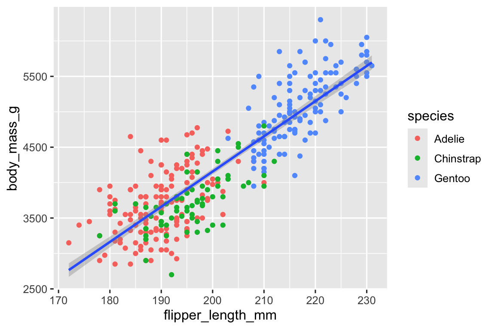
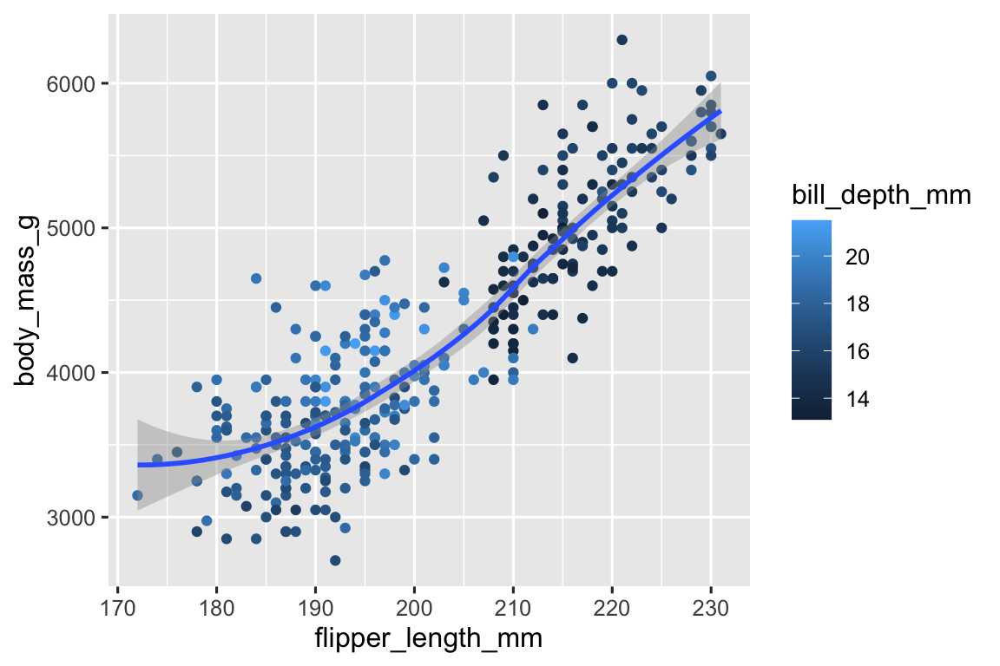
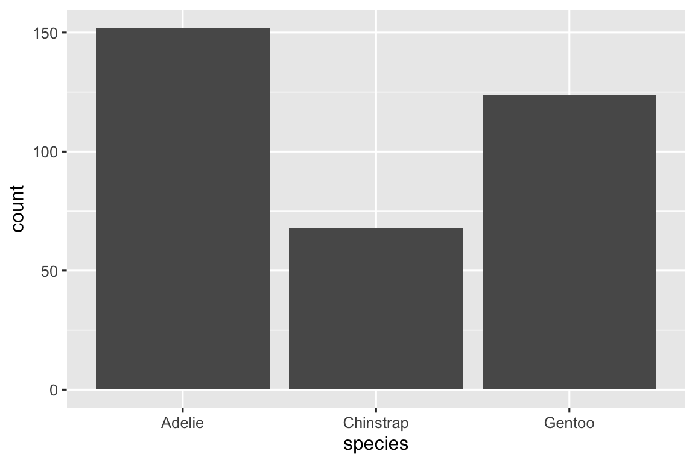
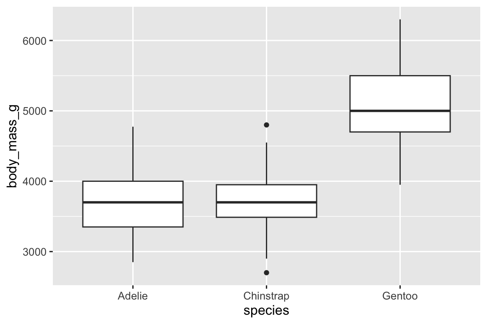
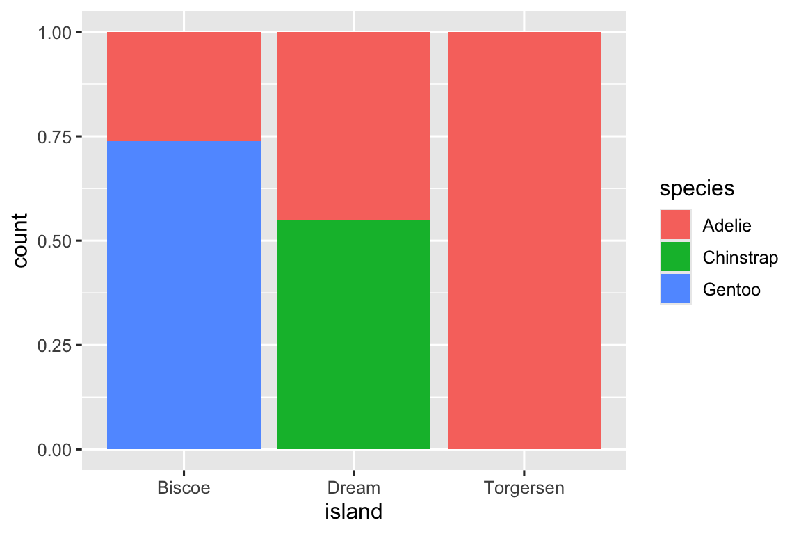

library(tidyverse)
#> ── Attaching core tidyverse packages ───────────────────── tidyverse 2.0.0 ──
#> ✔ dplyr 1.1.4 ✔ readr 2.1.5
#> ✔ forcats 1.0.0 ✔ stringr 1.5.1
#> ✔ ggplot2 3.5.1 ✔ tibble 3.2.1
#> ✔ lubridate 1.9.3 ✔ tidyr 1.3.1
#> ✔ purrr 1.0.2
#> ── Conflicts ─────────────────────────────────────── tidyverse_conflicts() ──
#> ✖ dplyr::filter() masks stats::filter()
#> ✖ dplyr::lag() masks stats::lag()
#> ℹ Use the conflicted package (<http://conflicted.r-lib.org/>) to force all conflicts to become errors1 数据可视化
1.1 引言
“简单的图表比任何其他工具都能给数据分析师带来更多的信息.”
— John Tukey
R虽然有几个制图系统，但ggplot2是最优雅、功能最多的一个系统， ggplot2实现了描述和构建图形的连贯系统，即图形的语法。基 于ggplot2，通过学习一个系统并将其应用于许多地方，你可以做更多的事情而且速度更快。
本章将告诉你如何利用ggplot2可视化数据。我 们将首先创建一个简单的散点图，并用它引入ggplot2的基本构建模块，美学映射和几何对象。然 后将引导你可视化单个变量的分布以及可视化两个或多个变量之间的关系。最 后，保存所做的图和一些故障排除提示。
1.1.1 必要条件
本章重点介绍ggplot2， 它是tidyverse的核心包之一。要 访问本章中使用的数据集、帮助页和函数，请运行以下命令加载tidyverse：
这一行代码将加载 tidyverse，这是在几乎所有数据分析中都会用到的包。它 还告诉您tidyverse中的哪些函数与base R中的函数冲突（或者与您可能加载的其他包冲突）1。
如果运行这段代码得到了错误信息，there is no package called 'tidyverse'，你需要先安装它，然后再次运行library()。
install.packages("tidyverse")
library(tidyverse)每个包只需要安装一次，但每次启动新会话时都需要加载它。
除了tidyverse, 我们还会用到palmerpenguins包，其中包含penguins数据集，记录了Palmer群岛三个岛屿上企鹅的身体测量数据，以及ggthemes包，它提供了一个色盲安全调色板。
library(palmerpenguins)
library(ggthemes)1.2 第一步
长鳍企鹅的体重是比短鳍企鹅的体重大还是小？你 可能已经有了答案，但试着让你的答案更精确。鳍 长和体重之间的关系是什么样的？正 相关还是负相关？线 性的还是非线性的？这 种关系会因企鹅的种类而异吗？企 鹅生活的岛屿不同会有影响吗？让 我们创建可视化图形来回答这些问题。
1.2.1 penguins 数据框
您可以使用包palmerpenguins（palmerpenguins::penguins）中的penguins数据框架来测试你对这些问题的答案。数 据框架是变量(列)和观测(行)的矩形集合。p enguins 收录了344 条观测，由Kristen Gorman博士和南极科考站帕尔默站收集并提供2。
为了使讨论更容易，让我们定义一些术语：
变量：变量是可以测量的数量、质量或属性。
值：值是你测量一个变量时的状态，一个变量的值可能会随着测量的不同而变化。
观测：观测是在相似条件下进行的一组测量（通常在相同的时间和相同的对象上进行）。一 个观测会包含几个值，每个值与不同的变量相关联。我 们有时将一个观测称为一个数据点。
表格数据：表格数据是一组值，每个值与一个变量和一个观测相关。如 果将每个值放在自己的“单元格”中，将每个变量放在自己的列中，将每个观测放在自己的行中，则表格数据是整洁的。
在这种情况下，变量指的是所有企鹅的一个属性，而观测值指的是单个企鹅的所有属性。
在控制台中键入数据框的名称，R会输出其内容的预览。需 要注意的是这个预览的顶部显示有tibble 。在 tidyverse中，我们使用称为tibbles的特殊数据框，随后你将了解到更多。
penguins
#> # A tibble: 344 × 8
#> species island bill_length_mm bill_depth_mm flipper_length_mm
#> <fct> <fct> <dbl> <dbl> <int>
#> 1 Adelie Torgersen 39.1 18.7 181
#> 2 Adelie Torgersen 39.5 17.4 186
#> 3 Adelie Torgersen 40.3 18 195
#> 4 Adelie Torgersen NA NA NA
#> 5 Adelie Torgersen 36.7 19.3 193
#> 6 Adelie Torgersen 39.3 20.6 190
#> # ℹ 338 more rows
#> # ℹ 3 more variables: body_mass_g <int>, sex <fct>, year <int>这个数据框包含 8 列。如 果使用glimpse()，你可以看到所有变量和每个变量的前几个观察值。如 果你在使用RStudio，运行View(penguins)会打开一个交互式数据预览器。
glimpse(penguins)
#> Rows: 344
#> Columns: 8
#> $ species <fct> Adelie, Adelie, Adelie, Adelie, Adelie, Adelie, A…
#> $ island <fct> Torgersen, Torgersen, Torgersen, Torgersen, Torge…
#> $ bill_length_mm <dbl> 39.1, 39.5, 40.3, NA, 36.7, 39.3, 38.9, 39.2, 34.…
#> $ bill_depth_mm <dbl> 18.7, 17.4, 18.0, NA, 19.3, 20.6, 17.8, 19.6, 18.…
#> $ flipper_length_mm <int> 181, 186, 195, NA, 193, 190, 181, 195, 193, 190, …
#> $ body_mass_g <int> 3750, 3800, 3250, NA, 3450, 3650, 3625, 4675, 347…
#> $ sex <fct> male, female, female, NA, female, male, female, m…
#> $ year <int> 2007, 2007, 2007, 2007, 2007, 2007, 2007, 2007, 2…penguins 中的变量包括：
species：企鹅的种类（Adelie, Chinstrap, or Gentoo）flipper_length_mm: 企鹅鳍的长度，以毫米为单位body_mass_g: 企鹅的体重，以克为单位。
要了解更多关于penguins的信息，可以运行?penguins打开帮助页面。
1.2.2 最终目标
本章的最终目标是在考虑企鹅种类的情况下重建展示企鹅鳍长和体重之间关系的视图。
![A scatterplot of body mass vs. flipper length of penguins, with a best fit line of the relationship between these two variables overlaid. The plot displays a positive, fairly linear, and relatively strong relationship between these two variables. Species (Adelie, Chinstrap, and Gentoo) are represented with different colors and shapes. The relationship between body mass and flipper length is roughly the same for these three species, and Gentoo penguins are larger than penguins from the other two species.](data-visualize_files/figure-html/unnamed-chunk-7-1.png)
1.2.3 构建ggplot
我们一步一步重建这个图。
利用ggplot2包的函数ggplot()绘图。首 先定义一个绘图对象，然后向其添加图层。 ggplot()的第一个参数是在图中使用的数据集，因此ggplot(data = penguins)创建了一个空图，用于显示penguins数据，但由于我们还没有告诉它如何可视化它，所以现在它是空的。这 不是一个可以让人动心的图，但你可以把它想象成一块空白画布，你可以在上面画出剩下的图层。
ggplot(data = penguins)接下来，需要告诉ggplot()如何将数据中的信息以视觉方式呈现。 ggplot()函数的mapping 参数定义了数据集中的变量如何映射到图表的视觉属性（aesthetics）。 mapping参数总是在aes()函数中定义，而aes()的x和y参数则指定了哪些变量映射到x轴和y轴上。现 在，我们只将鳍长映射到x轴的美学属性上，将体重映射到y轴的美学属性上。g gplot2会在数据参数中查找映射的变量，在这个例子中就是penguins。
下图显示了添加这些映射的结果。
ggplot(
data = penguins,
mapping = aes(x = flipper_length_mm, y = body_mass_g)
)空画布现在有了更多构造，我们已清楚知道鳍的长度在哪里显示（x轴），身体质量在哪里显示（y轴）。但 penguins本身还没有出现在图中。这 是因为在代码中，我们还没有明确说明如何在图上表示来自数据框架的观测。
为此我们需要定义一个geom（几何对象），geom是一个用来表示数据的图形。这 些geom在ggplot2中使用以geom_开头的函数。我 们通常利用图使用的geom类型来描绘图形。例 如，条形图使用geom_bar()，折线图使用geom_line()，箱形图使用geom_boxplot()，散点图使用geom_point()，等等。
函数geom_point()为图添加了一个点图层，从而创建了散点图。g gplot2附带了许多geom函数，每个函数都为绘图添加不同类型的层。 你将在书中学到很多geom，特别是在 章节 9 中。
ggplot(
data = penguins,
mapping = aes(x = flipper_length_mm, y = body_mass_g)
) +
geom_point()
#> Warning: Removed 2 rows containing missing values or values outside the scale range
#> (`geom_point()`).
现在我们得到了一些我们可能认为是“散点图”的东西，但这还不是我们的“最终目标”。但 利用这个图可以开始回答当初激发我们探索兴趣的问题：“鳍长和体重之间的关系是什么?” 这种关系似乎是正的（随着鳍的长度增加体重也会增加），呈线性（这些点聚集在一条直线上，而不是一条曲线），且线性关系比较强（在这样一条直线周围没有太多的发散点)。就体重而言，脚蹼较长的企鹅通常体型较大。
在添加更多图层到这个图之前，让我们暂停一下，回顾一下我们得到的警告信息：
Removed 2 rows containing missing values (
geom_point()).
我们看到这条信息是因为我们的数据集中有两只企鹅缺少体重和（或）鳍长值，如果没有这两个值，ggplot2无法在图上表示它们。像 R一样，ggplot2也秉承这样一种理念：缺失值永远不应该无声地消失。这 种类型的警告可能是你在处理实际数据时最常见的警告类型之一。缺 失值是一个非常常见的问题，你将在本书中了解更多关于它们的信息，特别是在 章节 18 中。对 于本章剩下的部分，我们将忽略这个警告，这样它就不会出现在我们制作的每个图的旁边。
1.2.4 添加美学和图层
散点图对于展示两个数值变量之间的关系非常有用，但是对于两个变量之间任何明显的关系都应持怀疑态度，并询问是否有其他变量可以解释或改变这种明显关系的性质，这总是一个好的思路。例 如，不同物种的鳍长和体重的关系是否有所不同？让 我们将物种纳入图中，看看这是否能揭示出这些变量之间明显关系的任何额外见解。我 们通过使用不同颜色的点代表不同物种来实现这一点。
为了实现这一点，我们需要修改美学还是geom？如 果你猜测是函数aes() 内的美学映射，那么表明你已经掌握了使用ggplot2进行数据可视化的方法！ 如果不是这样也不用担心， 在本书中你将制作更多的ggplot图，在制图的过程中有很多机会验证你的直觉。
ggplot(
data = penguins,
mapping = aes(x = flipper_length_mm, y = body_mass_g, color = species)
) +
geom_point()当分类变量被映射到美学上时，ggplot2将自动为变量的每个水平（三个物种中的一个）分配一个唯一的美学值（这里是某种颜色），这个过程被称为scaling。g gplot2还将添加一个图例，解释哪些值对应于哪些水平。
现在让我们再添加一层：一条显示体重和鳍长之间关系的平滑曲线。在 继续之前请参考上面的代码，并考虑如何将其添加到现有的图中。
由于这是一个代表数据的新geom，我们将在我们的点几何上添加一个新的geom作为图层：geom_smooth()。我 们将指定基于method = "lm"的线性模型（linear model）绘制最佳拟合直线。
ggplot(
data = penguins,
mapping = aes(x = flipper_length_mm, y = body_mass_g, color = species)
) +
geom_point() +
geom_smooth(method = "lm")我们已经成功地添加了直线，但是这个图和第 小节 1.2.2 节中的图看起来并不像，那里的图形整个数据集只有一条直线，而这里每个物种都有单独的一条直线。
在ggplot()中定义的美学映射（aesthetic mappings）在全局级别时，会被传递到图的每一个后续的几何层（geom layers）。然 而，ggplot2 中的每个geom函数也可以接受一个映射参数（mapping argument），这允许在局部级别定义美学映射，这些映射会添加到从全局级别继承的映射中。由 于我们希望点（points）的颜色基于物种（species）来设置，但不想为它们将线（lines）分开，我们应该只在geom_point()中指定color = species。
ggplot(
data = penguins,
mapping = aes(x = flipper_length_mm, y = body_mass_g)
) +
geom_point(mapping = aes(color = species)) +
geom_smooth(method = "lm")
瞧!我 们有了一些看起来很像我们最终目标的东西，尽管它还不完美。我 们仍然需要为每种企鹅使用不同的形状，并改进标签。
在图表上仅使用颜色来表示信息通常不是一个好主意，因为由于色盲或其他色觉差异，人们对颜色的感知会有所不同。因 此，除了颜色之外，我们还可以将物种映射到形状美学上。
ggplot(
data = penguins,
mapping = aes(x = flipper_length_mm, y = body_mass_g)
) +
geom_point(mapping = aes(color = species, shape = species)) +
geom_smooth(method = "lm")注意，图例也会自动更新以反映点的不同形状。
最后，我们使用labs()函数在一个新的层中改进图的标签。l abs()函数的一些参数含义是不言自明的：title用于添加标题，subtitle用于添加副标题。其 他参数与美学映射相对应，x是x轴的标签，y是y轴的标签，而color和shape则定义了图例中的标签。此 外，我们可以使用来自ggthemes包的scale_color_colorblind()函数来改进颜色调色板，以确保它对色盲用户也是安全的。
ggplot(
data = penguins,
mapping = aes(x = flipper_length_mm, y = body_mass_g)
) +
geom_point(aes(color = species, shape = species)) +
geom_smooth(method = "lm") +
labs(
title = "Body mass and flipper length",
subtitle = "Dimensions for Adelie, Chinstrap, and Gentoo Penguins",
x = "Flipper length (mm)", y = "Body mass (g)",
color = "Species", shape = "Species"
) +
scale_color_colorblind()![A scatterplot of body mass vs. flipper length of penguins, with a line of best fit displaying the relationship between these two variables overlaid. The plot displays a positive, fairly linear, and relatively strong relationship between these two variables. Species (Adelie, Chinstrap, and Gentoo) are represented with different colors and shapes. The relationship between body mass and flipper length is roughly the same for these three species, and Gentoo penguins are larger than penguins from the other two species.](data-visualize_files/figure-html/unnamed-chunk-15-1.png)
我们终于有了一个完全符合我们“最终目标”的图形!
1.2.5 练习
penguins有多少行？多 少列？数据框
penguins中的bill_depth_mm变量是什么？阅 读?penguins的帮助文件后找到答案；制作
bill_depth_mm和bill_length_mm的散点图；也就是说，创建一个散点图，y轴为bill_depth_mm, x轴为bill_length_mm。描 述这两个变量之间的关系；如果你做一个
species与bill_depth_mm的散点图会发生什么？什 么几何对象是更好的选择？为什么下面的代码会给出一个错误，如何修复它?
ggplot(data = penguins) + geom_point()na.rm参数在geom_point()中起什么作用？这 个参数的默认值是什么？创 建一个散点图，并在其中将这个参数设置为TRUE。在你之前练习的图中添加以下标题：“数据来自 palmerpenguins 包。” 提示：查看
labs()函数的文档。重新创建以下可视化。
bill_depth_mm应该映射到哪个美学属性上？它 应该在全局级别映射还是在几何对象级别映射？
在头脑中运行这段代码，预测输出将是什么样子；然后在R中运行代码并检查你的预测。
ggplot( data = penguins, mapping = aes(x = flipper_length_mm, y = body_mass_g, color = island) ) + geom_point() + geom_smooth(se = FALSE)这两张图看起来会不同吗？为 什么相同/为什么不同？
ggplot( data = penguins, mapping = aes(x = flipper_length_mm, y = body_mass_g) ) + geom_point() + geom_smooth() ggplot() + geom_point( data = penguins, mapping = aes(x = flipper_length_mm, y = body_mass_g) ) + geom_smooth( data = penguins, mapping = aes(x = flipper_length_mm, y = body_mass_g) )
1.3 ggplot2 调用
随着从入门部分学习的深入，我们将过渡到更简洁的 ggplot2 代码表达式。到 目前为止，我们已经非常明确了，简化代码对你的学习是非常有帮助的：
ggplot(
data = penguins,
mapping = aes(x = flipper_length_mm, y = body_mass_g)
) +
geom_point()通常，函数的前一两个参数非常重要，你应该牢记它们。在 ggplot()中，前两个参数是data和mapping，在本书的剩余部分，我们将不再提供这些参数的名称。这 样既节省打字时间，又可通过减少额外文字，更容易地看出不同图之间的差异。这 是一个非常重要的编程关注点，我们将在 章节 25 中再次讨论。
将前面的图更简洁地重写为：
ggplot(penguins, aes(x = flipper_length_mm, y = body_mass_g)) +
geom_point()在将来，您还将了解管道|>，它将允许你使用以下命令创建该图形:
penguins |>
ggplot(aes(x = flipper_length_mm, y = body_mass_g)) +
geom_point()1.4 可视化分布
如何可视化变量的分布取决于变量的类型：分类还是数值。
1.4.1 分类变量
如果一个变量只能取一小组值中的一个，那么它就是分类变量。要 检查分类变量的分布，可以使用条形图。条 形图的高度显示了每个x值的观测次数。
ggplot(penguins, aes(x = species)) +
geom_bar()
在具有非有序水平的分类变量的条形图中，如上面提到的企鹅物种，通常更可取思路的是根据它们的频率重新排序条形图。这 样做需要将变量转换为因子(R如何处理分类数据)，然后重新排序该因子的水平。
ggplot(penguins, aes(x = fct_infreq(species))) +
geom_bar()您将在 章节 16 中学到更多关于因子和处理因子的函数（如上面用到的fct_infreq()）。
1.4.2 数值变量
如果一个变量可以在一个大的数值范围内取值，并且对这些数值进行加、减或取平均数是有意义的，那么这个变量就是数值型（或定量型）的。数 值型变量可以是连续的，也可以是离散的。
一个常用于连续变量分布的可视化方法是直方图。
ggplot(penguins, aes(x = body_mass_g)) +
geom_histogram(binwidth = 200)直方图将x轴分成等间距的区间（或称为“箱”），然后使用条形的高度来显示落在每个区间内的观察值的数量。在 上面的图中，最高的条形表示有39个观察值的body_mass_g值在3,500克到3,700克之间，这是条形的左右边缘。
你可以使用binwidth参数来设置直方图中区间的宽度，这个参数是以x变量的单位来衡量的。当 使用直方图时，你应该探索不同的区间宽度，因为不同的区间宽度可能会揭示不同的模式。在 下面的图中，区间宽度为20太窄了，导致条形太多，使得难以确定分布的形状。类 似地，区间宽度为2,000太高了，导致所有数据只被分到三个条形中，也难以确定分布的形状。区 间宽度取200达到了合理的平衡。
ggplot(penguins, aes(x = body_mass_g)) +
geom_histogram(binwidth = 20)
ggplot(penguins, aes(x = body_mass_g)) +
geom_histogram(binwidth = 2000)
数值变量分布的另一种可视化方式是密度图。密 度图是直方图的平滑版本，是连续数据的实用替代方案，特别是当数据来自一个潜在的平滑分布时。我 们不会深入了解geom_density()如何估计密度（你可以在函数文档中了解更多），但我们可通过一个类比来解释如何绘制密度曲线。想 象一个由木块制成的直方图，然后想象你在直方图上放下一根煮熟的面条，面条在木块上披挂的形状可以看作是密度曲线的形状。与 直方图相比，它显示的细节较少，但可以更容易地快速了解分布的形状，特别是关于众数和偏态。
ggplot(penguins, aes(x = body_mass_g)) +
geom_density()
#> Warning: Removed 2 rows containing non-finite outside the scale range
#> (`stat_density()`).1.4.3 练习
做一个企鹅种类的条形图，把物种分配给
y。这 个图有什么不同？下面两个图有什么不同？哪 种美学（颜色或填充）对改变条的颜色更有用？
ggplot(penguins, aes(x = species)) + geom_bar(color = "red") ggplot(penguins, aes(x = species)) + geom_bar(fill = "red")geom_histogram()中的参数bins起什么作用？在加载tidyverse包后，对
diamonds数据集中的carat变量制作一个直方图。尝 试使用不同的区间宽度。哪 种区间宽度揭示了最有趣的模式？
1.5 可视化关系
为了可视化关系，我们需要将至少两个变量映射到图的美学上。在 下面的内容中，你将了解用于可视化两个或多个变量之间关系的常用绘图以及用于创建它们的几何图形。
To visualize a relationship we need to have at least two variables mapped to aesthetics of a plot. In the following sections you will learn about commonly used plots for visualizing relationships between two or more variables and the geoms used for creating them.
1.5.1 数值变量和分类变量
为了可视化数值变量和分类变量之间的关系，我们可以使用并列箱线图。箱 线图是一种描述分布的位置度量指标（百分位数）的视觉简写形式，它还有助于识别潜在的异常值。如 图 1.1 所示，每个箱线图包括：
- 一个箱子，表示数据中间一半的范围，即从分布的25%百分位数到75%百分位数的距离，这个距离称为四分位距（interquartile range，IQR）。在箱子的中间有一条线，表示分布的中位数，即50%百分位数。这三条线可以让你感受到分布的离散程度以及分布是否关于中位数对称或偏向一侧。
- 视觉点，用于显示距离箱子边缘超过1.5倍IQR的观测值。这些异常点是不寻常的，因此单独绘制。
- 一条线（或称为“胡须”），从箱子的每个末端延伸出去，直到分布中最远的非异常值点。

让我们用geom_boxplot()来看看按物种分组的企鹅体重的分布:
ggplot(penguins, aes(x = species, y = body_mass_g)) +
geom_boxplot()
或者，使用geom_density()绘制密度图。
ggplot(penguins, aes(x = body_mass_g, color = species)) +
geom_density(linewidth = 0.75)我们还使用了linewidth参数来定制线条的粗细，以便使它们在背景中更加突出。
此外，我们可以将物种映射到颜色和填充的美学特性，并使用alpha美学特性为填充的密度曲线添加透明度。这 个美学特性取值范围在0（完全透明）和1（完全不透明）之间。在 下图中，它被设置为0.5。
ggplot(penguins, aes(x = body_mass_g, color = species, fill = species)) +
geom_density(alpha = 0.5)注意我们在这里使用的术语:
- 如果想让美学所代表的视觉属性根据变量的值而变化，我们可以将变量映射到美学。
- 否则，设置该美学特性的值。
1.5.2 两个分类变量
我们可以使用堆叠条形图来可视化两个分类变量之间的关系。例 如，下面的两个堆叠条形图都显示了岛屿和物种之间的关系，或者具体地说，显示了每个岛屿内物种的分布。
第一张图显示了每个岛屿上每种企鹅的频数。频 数图显示，每个岛上的Adelies企鹅数量相等。但 是，我们无法很好地感知每个岛屿内部的比例平衡。
ggplot(penguins, aes(x = island, fill = species)) +
geom_bar()第二个图是通过在geom中设置position = "fill"创建的相对频数图，它对于比较不同岛屿上的物种分布更有用，因为它不受岛屿之间企鹅数量不等的影响。根 据此图，我们可以看到Gentoo企鹅都生活在Biscoe岛上，约占该岛屿企鹅的75%，Chinstrap企鹅都生活在Dream岛上，约占该岛屿企鹅的50%，而Adelie企鹅生活在所有三个岛屿上，并且Torgersen岛上都是Torgersen企鹅。
ggplot(penguins, aes(x = island, fill = species)) +
geom_bar(position = "fill")
在创建这些条形图时，我们将要被分割成条形的变量映射到x美学上，而将改变条形内部颜色的变量映射到fill美学上。
1.5.3 两个数值变量
到目前为止，你已经学习了散点图（用geom_point()创建）和平滑曲线（用geom_smooth()创建），用于可视化两个数值变量之间的关系。散 点图可能是用于可视化两个数值变量间关系的最常用图形。
ggplot(penguins, aes(x = flipper_length_mm, y = body_mass_g)) +
geom_point()1.5.4 三个或更多变量
正如我们在@sec-adding-aesthetics-layers 中看到的，我们可以通过将更多变量映射到额外的美学特性来将它们融入图表中。例 如，在下面的散点图中，点的颜色代表物种，而点的形状代表岛屿。
ggplot(penguins, aes(x = flipper_length_mm, y = body_mass_g)) +
geom_point(aes(color = species, shape = island))然而，在图表中添加过多的美学映射会使它变得杂乱无章且难以理解。另 一种特别适用于分类变量的方法是将图形拆分为多个分面（facets），即每个分面显示数据的一个子集。
要通过单个变量将图表拆分为分面，请使用facet_wrap()。f acet_wrap()的第一个参数是一个公式（formula）3，通过~后跟变量名来创建这个公式，传递给facet_wrap()的变量应该是分类变量。
ggplot(penguins, aes(x = flipper_length_mm, y = body_mass_g)) +
geom_point(aes(color = species, shape = species)) +
facet_wrap(~island)在 章节 9 中，你将学习许多其他用于可视化变量分布以及它们之间关系的几何对象（geoms）。
1.5.5 练习
ggplot2包中捆绑的mpg数据框包含了美国环境保护局收集的234个观测值，涵盖了38种汽车型号。mpg中的哪些变量是分类变量？哪 些变量是数值变量？（ 提示：键入?mpg以读取数据集的文档。）当你运行mpg时，如何查看这些信息？使用
mpg数据框制作hwy与displ的散点图。接 下来，将第三个数值变量映射到color，然后映射到size，再同时映射到color和size，最后映射到shape。这 些美学特性在分类变量与数值变量上表现有何不同？在
hwy与displ的散点图中，如果将第三个变量映射到linewidth，会发生什么？如果你将同一个变量映射到多个美学特性上会发生什么？
制作
bill_depth_mm与bill_length_mm的散点图，并按species对点进行着色。通 过按物种着色，可以揭示这两个变量之间的关系是什么？如 果按species分面又会如何？为什么以下代码会生成两个独立的图例？你 如何修复它以合并这两个图例？
ggplot( data = penguins, mapping = aes( x = bill_length_mm, y = bill_depth_mm, color = species, shape = species ) ) + geom_point() + labs(color = "Species")创建以下两个堆叠条形图。第 一个图可以回答哪个问题？第 二个图可以回答哪个问题？
ggplot(penguins, aes(x = island, fill = species)) + geom_bar(position = "fill") ggplot(penguins, aes(x = species, fill = island)) + geom_bar(position = "fill")
1.6 保存图形
一旦你创建了图形，你可能想将其从R中导出并保存为图像，以便在其他地方使用。这 就是ggsave()函数的作用，它会将最近创建的图保存到磁盘上：
ggplot(penguins, aes(x = flipper_length_mm, y = body_mass_g)) +
geom_point()
ggsave(filename = "penguin-plot.png")这会将图保存到工作目录, 您会在@sec-workflow-scripts-projects 中更多地了解这个概念。
如果你没有指定width和height，则将从当前绘图设备的尺寸中获取它们。为 了代码的可重复性，你应该指定它们。可 以在文档中了解更多关于ggsave()的信息。
然而，一般来说，我们推荐你使用Quarto来组合你的最终报告，Quarto是一个可重复的创作系统，它允许你将代码和文本穿插在一起，并自动将你的图包含在报告中。你 将在 章节 28 中了解更多关于Quarto的信息。
1.6.1 练习
运行以下代码行。这 两个图中哪一个被保存为
mpg-plot.png？为 什么？ggplot(mpg, aes(x = class)) + geom_bar() ggplot(mpg, aes(x = cty, y = hwy)) + geom_point() ggsave("mpg-plot.png")你需要在上面的代码中更改什么以将图形保存为PDF而不是PNG？如 何知道在
ggsave()中可以保存哪些类型的图像文件？
1.7 常见问题
当你开始运行R代码时，你很可能会遇到问题。不 用担心，每个人都会遇到这样的问题。我 们已经写了多年的R代码，但每天我们还是会写出第一次尝试时不工作的代码！
首先，仔细比较你正在运行的代码和书中的代码。R 非常挑剔，一个放错位置的字符可能就会产生截然不同的结果。确 保每个(都有一个匹配的)，每个双引号"都有另一个"配对。有 时你运行代码后什么都不会发生。检 查控制台左侧：如果是一个+，这意味着R认为你没有输入完整的表达式，它在等待你完成它。在 这种情况下，通常很容易通过按ESC键来中止当前命令的处理，然后重新开始。
在创建ggplot2图形时，一个常见的问题是将加号+放在错误的位置：它必须放在行的末尾，而不是开头。换 句话说，确保你没有写出这样的代码：
ggplot(data = mpg)
+ geom_point(mapping = aes(x = displ, y = hwy))如果你仍然无法解决问题，尝试使用帮助功能。你 可以在控制台中运行?function_name来获取任何R函数的帮助，或者在RStudio中突出显示函数名并按F1键。如 果帮助信息看起来不太有用，不要担心，直接跳到示例部分，寻找与你试图做的事情相匹配的代码。
如果这没有帮助，请仔细阅读错误消息。有 时答案就隐藏在其中！但 是当你刚开始学习R时，即使答案在错误消息中，你可能还不知道如何理解它。另 一个很好的工具是Google：尝试搜索错误消息，因为很可能有人遇到过同样的问题，并在网上得到了帮助。
1.8 小结
在本章中，你学习了使用ggplot2进行数据可视化的基础知识。我 们首先介绍了ggplot2的基本原理：可视化是一种将你的数据中的变量映射到诸如位置、颜色、大小和形状等美学属性的过程。然 后，你学习了如何逐层增加复杂性并改进你的图表的呈现方式。你 还学习了如何利用额外的美学映射和/或通过将图表分割成多个小图（faceting）来可视化单个变量的分布以及两个或多个变量之间的关系。
在本书中，我们将反复使用可视化，并在需要时介绍新的技术；同时在 章节 9 到 章节 11 中更深入地探讨使用ggplot2创建可视化。
掌握了可视化的基础后，我们将在下一章中稍微转换一下方向，给你一些实用的工作流程建议。我 们在本书的这一部分穿插了工作流程建议和数据科学工具，因为这将帮助你在编写越来越多的R代码时保持组织有序。
你可以通过使用冲突包（conflicted package）来消除该消息，并按需强制解决冲突，这在你加载更多包时变得尤为重要。可 以在https://conflicted.r-lib.org上了解更多关于此的信息。↩︎
Horst AM, Hill AP, Gorman KB (2020). palmerpenguins: Palmer Archipelago (Antarctica) penguin data. R package version 0.1.0. https://allisonhorst.github.io/palmerpenguins/. doi: 10.5281/zenodo.3960218.↩︎
这里的“formula”是由~创建的事物的名称，而不是“equation”的同义词。↩︎